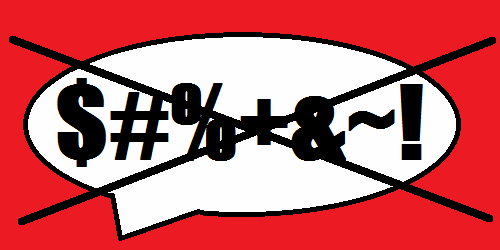
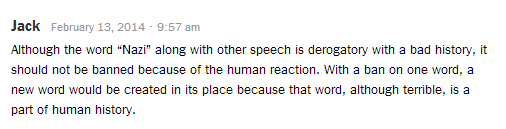
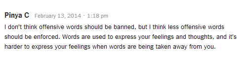
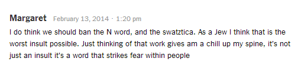
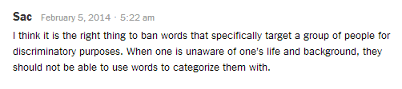

Assignment 3 - Web Design/Form & Function
Do Laws That Ban Offensive Words Make the World a Better Place?*
What if by law you were punished by saying a single offensive word? An article in the New York Times discusses an Israeli law that would do just that: punish anyone who says the word Natzi. It might not seem like much, but when completely thought through,m this law is completely out of line. Not only does it not solve the problem it claims to help, it also generates a series of unending issues and question. The Israeli law banning the word “Nazi” jeopardises the human right to freedom of speech, is impossible to enforce, and could lead to a series of unethical laws in the future.
What exactly is this “Nazi” law? According to the New York Times, this law would “make it a crime to call someone a slur associated with the Third Reich or use Holocaust-related symbols for a non-educational purpose.” If someone violated this law, they would be fined as much as $29,000 and spend up to six months in jail. The Nazi law was supposedly created to stop the “rising tide” of anti-Semitism and casual remarks based on the Third Reich in Israeli politics. Through careful examination, the many downfalls and ultimate failure of this plan can be identified.
To understand why the law might actually hurt its cause, one must understand what makes a “bad word” bad. A bad word is given power by the person the offensive word is affecting. If I call someone terrifying, they might take it as a complement or an insult depending on how they perceive that word. If they react to what I say, they have given me and the word power because I was able to change their action based on my actions alone. In the same respect, the more often a word is used the less power it has because people get used to it and react less. As Richard Stephens , a noted psychologist who researches swearing at Keele University in England, states “The more we swear, the less emotionally potent the words become. And without emotion, all that is left of a swear word is the word itself, unlikely to soothe anyone's pain.” One could make the argument that this is why many bad words are taboo to say in public, especially in public schools. If children were allowed to use offensive words and not be offended, than we would lose a powerful offensive word. But how does this apply to the Nazi law? Supposing that the law was actually effective in making people not saying Nazi, it would just give the word even more power. It wouldn’t just disappear. No, it would only make it a word to use in situations when you really wanted to harm the other person. Ironically, if we truly wanted to make the word powerless, we would instead encourage people to say it! Familiarily would take all power away from the word “Nazi.”
Following this idea, no word is inherently bad in in of itself. Every word is just a means to explain an idea or concept. As Steven Pinker explains in “ Freedom’s Curse ,” most “taboo words relinquish their literal meanings and retain only a coloring of emotion, and then just an ability to arouse attention.” He goes on to say that “given how language is interwoven with though any ban on words will lead to absurdities.” I full-heartedly agree with this sentiment. Banning a word merely denies us access to a way to communicate an opinion or idea but it in no way affects how we truly think. As Tauriq Moosa states in his essay “ No Words Should Be Banned ," “the words “knife”, “cut” and “children” are not so bad – but we can easily formulate a sentence, use a harsh or threatening voice, and use those words to constitute an actual threat. But we don’t ban the words “knife”, “cut” and “children”. The problem isn’t the words but the context or sentence in which they are used.” If the Israeli government truly wanted to make a change, they would focus on changing the way people think, not the way they speak.
Continuing the assumption that the law would prevent people from saying “Nazi”, this law would be completely ineffectual because other words would just take its place. If you stop people saying one offensive word, they would just choose another to have the same power. Language evolves over time as words become antique or words are needed to describe a new concept. There has always been a rude word to say to another person and there always will be. There is nothing any government or person can do to stop it. It is in human nature to be displeased with one another and to find a word that encompasses that emotion.
Not only is this law ineffective at its goal, it breaks human rights and leads down a path no government should go: one that ends in social turmoil and overthrow. We, as humans, should be allowed by basic human privilege to say what we want to say when we want to say it. Of course, this does not come without social punishment, but we still have that option. By using law to ban a phrase, they are setting the trend that not all things should be allowed to say, that some things are so bad they should not even be muttered. But where does this trend end? Start by banning “Nazi,” then ban “crap,” and soon fifty or so words are banned. Soon enough saying things aren’t enough and they must ban writing of those terrible words. Books containing those words are illegal to own and all of them must be burned. Eventually, you fall into the terrible reality shown in famous books like 1984 and Fahrenheit 451. This law is one step toward a terrible future. A great example of this type of law taken too far occurred in March 2012, when the New York City Department of Education attempted to pass a ban on 50 words from standardized tests . They planned to avoid topics that “could evoke unpleasant emotions in the students.” Among these words were “dinosaurs” because they could "call to mind evolution, which might upset fundamentalists” and “birthday” because they would offend Jehovah's Witnesses, who do not celebrate birthdays. Anyone can see that “dinosaurs” and “birthday” are two perfectly innocent words that have fallen victim to this out of control ban attempt. In the end, this law was met with opposition and did not pass.
How can a law like this be enforced and why should it be? In any circumstance where there isn’t a voice recording of the “offender”, this law would always be fought solely on the word of each person. Getting hard proof would almost never occur and a majority of cases would just be let go due to lack of evidence. Even then, this law could easily be used unethically. A corrupt officer or disgruntled enemy could easily accuse an innocent person of saying the word “Nazi” when they never did anything of the sort. There are far better things the resources spent used for the courts and officers for these useless cases could be used on. Even if someone was proven to be guilty, don’t you think that the punishment of $29,000 and up to six months in prison is just a tad bit high for saying a single word?
Overall, the Israeli law banning the word “Nazi” is terrible to enforce, jeopardises the human right of freedom of speech, and could lead to a series of unethical laws in the future. It achieves the opposite of its goal by giving the word even more power and is overall a waste of resources. Why make an offensive law to attempt to stop an offensive word?
Now that you know how I feel about the topic, lets take a look at what other people had to say:
Jacks comment is interesting because he mentions that we should not ban words based on "human reaction." What I think he is getting is at is the idea that words are just leaseholders for ideas. Banning a word is not useful because it just stops us from communicating fluidly. He also includes the idea that speech changes over time, and new words will just replace the old.
Pinya hits on some of the ideas I discussed earlier. In her own words, she talks about how banning words just makes communication more difficult. She also offers and interesting solution to the problem: encourage use of less offensive words. This idea could possibly help this issue because, rather than forcing people to stop using "Nazi", it would instead push them in the right direction. This theory follows the idea that governments should focus on changing the mentality of the people not the words they use.
Much like I have discussed before, Margaret talks about how the word "Nazi" evokes a negative response in people. She thinks this is a valid reason to ban the word but what she doesn't consider is that people fear the word because they fear what it represents. People inside still fear the terrible things the Nazis did in their time but not saying the word "Nazi" will not make the fear go away. Only working through those feelings and reworking our ideas about it will reallly help the issue.
Sac wants to ban words that specifically target groups and "categorize" them. Unfortunately, by human nature, we like to categorize things. If we take a word away that would categorize people, another would just replace it. Words that categorize groups are only given power by those who it categorizes and only they can stop the word from having a strong influence. Removing the word does not remove the issue.
My Style Choices
While my CSS code is fairly short, it does a lot to help the form of the page. By giving the page form, I help improve the function of all of my webpages and make it more interesting for the viewer. You can see the huge difference in how the page feels by looking at the contrast between this page and its unstylized version .
All of my pages use the same CSS because it gives the site personality and consistency that makes people more attracted to it. This idea is enforced by Chapter 7 of The Web Style Guide, “Repetition is not boring; it gives your site a consistent graphic identity that creates and then reinforces a distinct sense of “place” and makes your site memorable.” For this same reason, I also use the same shapes and color schemes for all my topics. The header, background, and foreground are all similar shades of red, which work together to improve the look of the page and make the reader read through the information in an easier manner. At first, I had my information written directly on the background color with a border around it but it was hard to read. To solve this issue, I used a lighter color for the text to appear on, which gave the words a higher contrast. Now all of the writing passes the all the contrast standards for web pages. By using the same CSS, people can easily surf the pages and know exactly where the most important information is because it has a consistent ordering of information. As stated by Chapter 7, “A well-organized page with clear groups of content shows the user at a glance how the content is organized and sets up modular units of content that form a predictable pattern over pages throughout the site.”
To make my page more professional, I formatted the text inside of a division element. I made it a set pixel width apart and floated it in the center of the page. At the time, I was unsure exactly why this helped improve my page, but my looking at it, I could tell immediately that it was better. The Web Style guide explained that by setting fixed boundaries it made the page more “stable whatever the size of the user’s screen” and the extra background space helped “crowding the edges of the browser windows with important elements of your page content.” This overall made the page much easier to read and gave it a very consistent format even with varying screen sizes. The style guide also warned that enlarged text might cause issues in formatting but I tested it and no issues were found for my particular site.
There were a few stylistic things I did to the text to make it easy to read. I left justified the text because the Web Style guide explained that it was the best choice. It showed that center-justified text is hard to read because the edge is hard to follow with the eye and that justified text causes black spaces called rivers to appear, but left-justified has none of these issues. I used Times New Roman because it helps lead the reader through the text because it contains serifs. I also centered the first level headers because I wanted to make them draw the eye of the viewer quicker and make it easy to understand the topic. Finally, I made the choice to not add indents because most online articles to not use tabs in their writing.
Finally, I used CSS to help format a couple of the major elements I put on every page. I used it to make the navbar look good as opposed to an awkward list of hyperlinks. I also used it to format the image at the top of the page so that it was rounded and had a border, which made it look more professional and help it fit in with the page better. Overall, without style, my pages would lose much of their interest and have difficulty preforming their function.